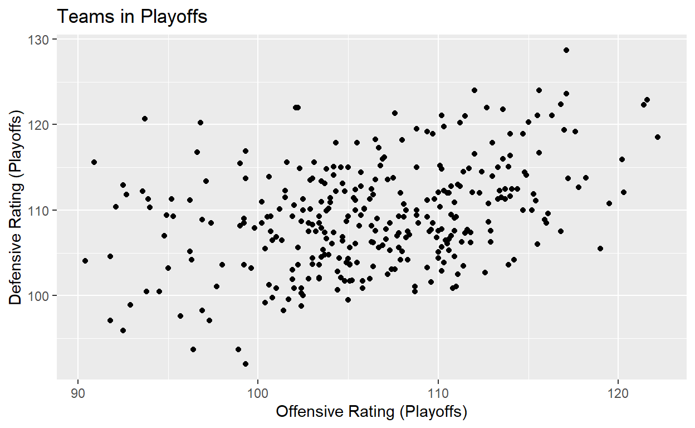
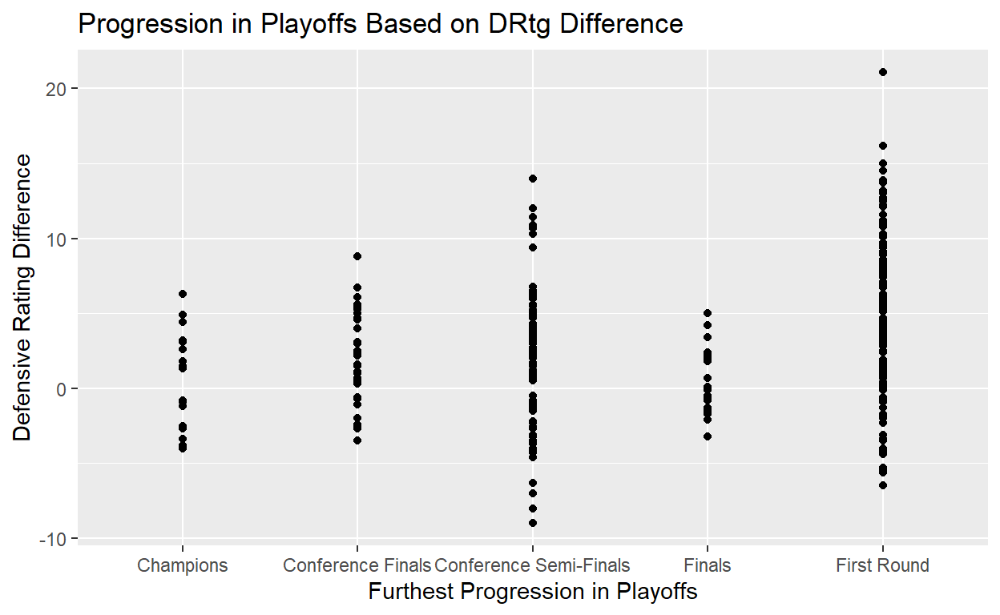
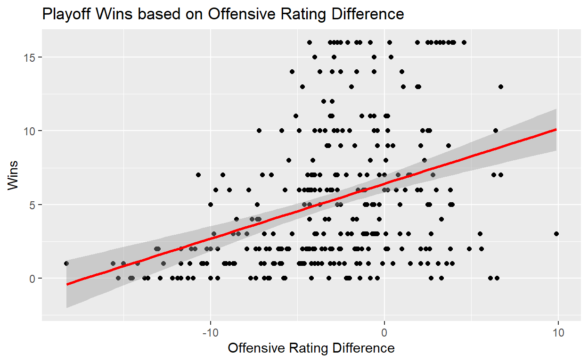
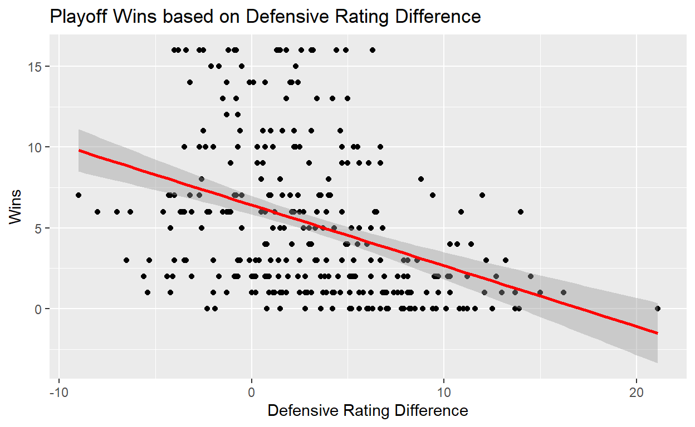
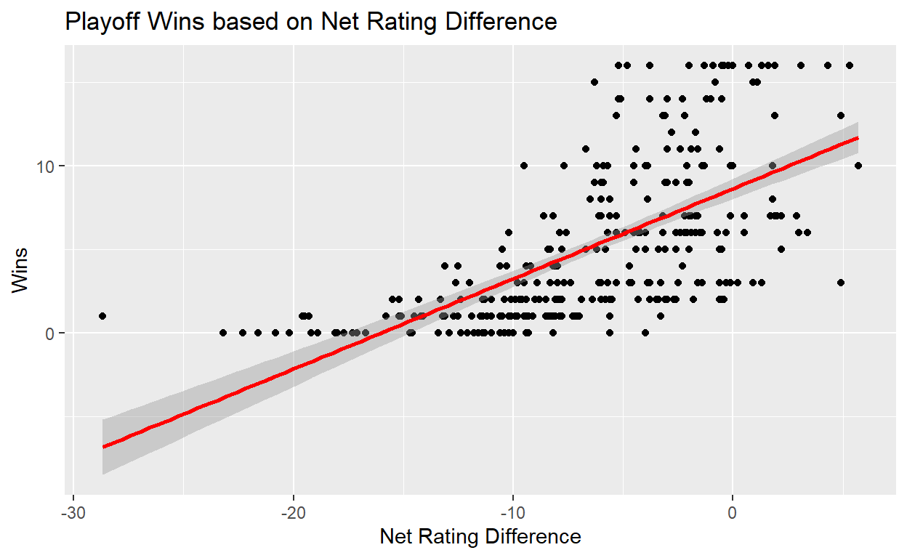

What Wins Championships: Offense or Defense?
In sports there’s a famous saying every coach seems to harp on: “offense wins you games, while defense wins you championships”. This adage suggests that while the glamour and excitement of offense, particularly in the form of star players with incredible scoring abilities, might lead a team to regular season victories and fill the stands with cheering fans, it is defensive strategy and willing defenders that are crucial for playoff success and ultimately securing a championship. In the context of the National Basketball Association (NBA), it seems as though teams are always pushing to sign or trade for as many offensive stars as possible, seemingly going against the implications of defense being more important, at least according to the saying. This raises the following question: Is offense or defense more indicative of playoff success in the NBA?
To answer this question I will examine the correlation between offensive/defensive rating of playoff teams in the NBA and playoff wins. Offensive rating is the number of points a team scores per 100 possessions, while defensive rating is the number of points a team allows per 100 possessions. I hypothesize that the old adage of defense being more important will stand true, meaning that the correlation between defensive rating and playoff wins will be stronger. There are 16 teams that enter the NBA playoffs, 8 from each of two conferences. The match ups of who plays who are based on regular season seeding, where first seed in a conference plays the eighth seed, second seed plays the seventh seed, and so on. I believe that as teams get deeper into the playoffs, and the higher seeds begin to play each other, the difference in offensive star power and efficiency becomes significantly smaller. As a result, I think what separates the teams that eventually go on to win the championship is not their offensive ability but rather defensive ability. Additionally, NBA playoff series are played in a best-of-seven format. By the nature of this format, the longer a series goes on, the more each team understands each others’ game plan. This brings about the idea of longer series between the better teams being more about “who wants it more” rather than game plan. I believe that defense is a better indicator of this “who wants it more” notion since defense is more effort based rather than skill based in comparison with offense.
Analysis of whether offense or defense is more indicative of playoff success is important for organizations when it comes to team construction. If defense is indeed more important teams may want to look less at acquiring the best offensive talent and rather look at building a more well rounded team set up to defend the best of the best in the playoffs. Additionally, such analysis can have a trickle down effect into lower leagues and lower age groups when it comes to development, focusing less on offensive skill set and more on defending well. Similarly, if my hypothesis is rejected, it leads credence to the idea of creating as offensively talented a team as possible (which is what teams seem to be doing nowadays).
The data was obtained from stathead.com. To create my dataset, I filtered through the website selecting all teams that made the playoffs from 2003-Present, taking the offensive rating and defensive rating for every team in both the regular season and playoffs for that year. The reason I chose 2003 as my starting point is because prior to 2003, the first round of the playoffs was a best-of-5 format instead of the typical best-of-7 that we see now. As a result a championship team in years prior to 2003 would need less than the 16 wins needed nowadays, and thus I decided it would be easier to do analysis on playoff years that follow the current format. After scraping the data, I then merged csv files.
| Season | Team | DRtg | ORtg | Net_Rtg | W | Playoff_Ortg | Playoff_DRtg | Playoff_Net_Rtg | Ortg_Difference | DRtg_Difference | Net_Rtg_Difference |
|---|---|---|---|---|---|---|---|---|---|---|---|
| 2022-23 | SAC | 116.8 | 119.4 | 2.6 | 3 | 110.7 | 112.8 | -2.1 | -8.7 | -4.0 | -4.7 |
| 2022-23 | ATL | 116.3 | 116.6 | 0.3 | 2 | 115.0 | 120.3 | -5.3 | -1.6 | 4.0 | -5.6 |
| 2020-21 | POR | 116.0 | 117.8 | 1.8 | 2 | 121.6 | 122.9 | -1.3 | 3.8 | 6.9 | -3.1 |
| 2021-22 | ATL | 114.9 | 116.5 | 1.6 | 1 | 102.3 | 114.9 | -12.6 | -14.2 | 0.0 | -14.2 |
| 2022-23 | NYK | 114.8 | 117.8 | 3.0 | 6 | 108.9 | 108.5 | 0.4 | -8.9 | -6.3 | -2.6 |
| 2019-20 | POR | 114.8 | 113.7 | -1.1 | 1 | 104.6 | 115.0 | -10.4 | -9.1 | 0.2 | -9.3 |
Looking at the dataset, we see it contains each team’s offensive (ORtg, Playoff_ORtg), defensive (DRtg, Playoff_DRtg), and net rating (Net_Rtg, Playoff_Net_Rtg) for both regular season and playoffs, as well as the team’s playoff wins (W). Additionally, the table contains the difference between the ratings in the playoffs and regular season (ORtg_Difference, DRtg_Difference), giving insight into how the two ratings translate once the pressure of the playoffs settles in.
Offensive rating is measured as points per 100 possessions. This is calculated as \(\frac{Total Points}{Total Possessions} \cdot 100\), meaning the higher offensive rating is, the better. Total points is exactly what it sounds like, how many points the team has scored. Total possessions is slightly more calculated, taking into account field goal attempts (FGA), offensive rebounds (OR), turnovers (TO), and free throws attempted (FTA). The formula for total possessions is FGA - OR + TO + (0.44 X FTA). As such, the higher an offensive rating, the better it is.
Defensive rating is measured as points allowed per 100 possessions. This is calculated very similarly to offensive rating, simply changing a teams total points and total possessions with their opponents’ values. So we get the formula \(\frac{Total Points Allowed}{Opponent Total Possessions} \cdot 100\). Note that for a good defensive rating, we want this number to be low.
Net rating is simply calculated by the following formula: Offensive Rating - Defensive Rating. Similarly for the differences between regular season and playoff ratings. These were simply calculated by subtracting Playoff Rating - Regular Season Rating.
What I am looking to determine is whether offensive rating or defensive rating better explains playoff success through studying the correlation between the ratings and playoff wins. Additionally, I want to look at how the difference between ratings in the regular season vs. playoffs correlates to playoff wins. This also helps determine which of the two translates better to the playoffs. As all of this data has been observed and I am simply looking for relationships between them, this study’s research design is classified as cross-sectional.
Teams_Reg_Season = data |>
ggplot(aes(x = ORtg, y = DRtg)) +
geom_point() +
labs(title = 'Teams in Regular Season',
x = 'Offensive Rating (Regular Season)',
y = 'Defensive Rating (Regular Season)')
Teams_Reg_SeasonTeams_Playoffs = data |>
ggplot(aes(x = Playoff_Ortg, y = Playoff_DRtg)) +
geom_point() +
labs(title = 'Teams in Playoffs',
x = 'Offensive Rating (Playoffs)',
y = 'Defensive Rating (Playoffs)')
Teams_Playoffs
Each point in these two graphs represents a different playoff team from 2003-Present. From the graph of teams in the regular season we see a very clear trend that as offensive rating increases so does defensive rating. Despite still seeing this overall trend in the playoffs, it is clearly not as strong based on the spread of the data points.
ORtg_vs_Progression = Playoff_Progression |>
ggplot(aes(x = Round, y = ORtg)) +
geom_point() +
labs(title = 'Progression in Playoffs Based on ORtg (Regular Season)',
x = 'Furthest Progression in Playoffs',
y = 'Offensive Rating')
ORtg_vs_ProgressionDRtg_vs_Progression = Playoff_Progression |>
ggplot(aes(x = Round, y = DRtg)) +
geom_point() +
labs(title = 'Progression in Playoffs Based on DRtg (Regular Season)',
x = 'Furthest Progression in Playoffs',
y = 'Defensive Rating')
DRtg_vs_ProgressionPlayoff_ORtg_vs_Progression = Playoff_Progression |>
ggplot(aes(x = Round, y = Playoff_Ortg)) +
geom_point() +
labs(title = 'Progression in Playoffs Based on ORtg (Playoffs)',
x = 'Furthest Progression in Playoffs',
y = 'Offensive Rating')
Playoff_ORtg_vs_ProgressionPlayoff_DRtg_vs_Progression = Playoff_Progression |>
ggplot(aes(x = Round, y = Playoff_DRtg)) +
geom_point() +
labs(title = 'Progression in Playoffs Based on DRtg (Playoffs)',
x = 'Furthest Progression in Playoffs',
y = 'Defensive Rating')
Playoff_DRtg_vs_ProgressionORtg_Difference_vs_Progression = Playoff_Progression |>
ggplot(aes(x = Round, y = Ortg_Difference)) +
geom_point() +
labs(title = 'Progression in Playoffs Based on ORtg Difference',
x = 'Furthest Progression in Playoffs',
y = 'Offensive Rating Difference')
ORtg_Difference_vs_ProgressionDRtg_Difference_vs_Progression = Playoff_Progression |>
ggplot(aes(x = Round, y = DRtg_Difference)) +
geom_point() +
labs(title = 'Progression in Playoffs Based on DRtg Difference',
x = 'Furthest Progression in Playoffs',
y = 'Defensive Rating Difference')
DRtg_Difference_vs_Progression
Here we get an overall look at the teams and their progression through the playoffs based on the different metrics in the dataset. We see that progression in the playoffs is linked to having both a good offensive rating and defensive rating, most teams cannot just have one or the other.
ORtg_plot = data |>
ggplot(aes(x = ORtg, y = W)) +
geom_point() +
geom_smooth(method = 'lm', color = "red") +
labs(title = 'Playoff Wins based on Offensive Rating',
x = 'Offensive Rating (Regular Season)',
y = 'Wins')
ORtg_plotORtg_Playoff_plot = data |>
ggplot(aes(x = Playoff_Ortg, y = W)) +
geom_point() +
geom_smooth(method = 'lm', color = "red") +
labs(title = 'Playoff Wins based on Playoff Offensive Rating',
x = 'Offensive Rating (Playoffs)',
y = 'Wins')
ORtg_Playoff_plotORtg_diff_plot = data |>
ggplot(aes(x = Ortg_Difference, y = W)) +
geom_point() +
geom_smooth(method = 'lm', color = "red") +
labs(title = 'Playoff Wins based on Offensive Rating Difference',
x = 'Offensive Rating Difference',
y = 'Wins')
ORtg_diff_plot
From the graphs for offensive rating and playoff offensive rating, we see that as offensive rating increases, so does the number of wins. The regression line indicates this positive correlation between the two. Additionally, we see that teams that improve their offensive rating in the playoffs also tend to perform better. These results make sense as a team that has a high offensive rating will be hard to beat because of how many points they are scoring.
ORtg_regression = lm(W ~ ORtg, data = data)
modelsummary::modelsummary(ORtg_regression,
statistic = c("s.e. = {std.error}",
"p = {p.value}"),
gof_map = c("nobs", "r.squared", "adj.r.squared"))| (1) | |
|---|---|
| (Intercept) | −26.867 |
| s.e. = 7.236 | |
| p = <0.001 | |
| ORtg | 0.293 |
| s.e. = 0.066 | |
| p = <0.001 | |
| Num.Obs. | 320 |
| R2 | 0.058 |
| R2 Adj. | 0.055 |
playoff_ORtg_regression = lm(W ~ Playoff_Ortg, data = data)
modelsummary::modelsummary(playoff_ORtg_regression,
statistic = c("s.e. = {std.error}",
"p = {p.value}"),
gof_map = c("nobs", "r.squared", "adj.r.squared"))| (1) | |
|---|---|
| (Intercept) | −29.074 |
| s.e. = 4.046 | |
| p = <0.001 | |
| Playoff_Ortg | 0.322 |
| s.e. = 0.038 | |
| p = <0.001 | |
| Num.Obs. | 320 |
| R2 | 0.185 |
| R2 Adj. | 0.182 |
ORtg_diff_regression = lm(W ~ Ortg_Difference, data = data)
modelsummary::modelsummary(ORtg_diff_regression,
statistic = c("s.e. = {std.error}",
"p = {p.value}"),
gof_map = c("nobs", "r.squared", "adj.r.squared"))| (1) | |
|---|---|
| (Intercept) | 6.418 |
| s.e. = 0.297 | |
| p = <0.001 | |
| Ortg_Difference | 0.373 |
| s.e. = 0.052 | |
| p = <0.001 | |
| Num.Obs. | 320 |
| R2 | 0.140 |
| R2 Adj. | 0.137 |
Now looking at the regression data for the three offensive rating variables that we are analyzing, we see that all three are highly statistically significant as each has a p-value < 0.001. This means that our three offensive rating variables are likely to have a true impact on the number of wins in the NBA, so our results are not due to random chance. This suggests that changes in each of these offensive rating metrics are associated with changes in the number of wins, even when considering the influence of the other variables in the model.
The ORtg coefficient is 0.293, meaning that for a 1 point increase in ORtg, we can expect wins to go up by 0.293. For Playoff_ORtg and ORtg_Difference our coefficients are 0.322 and 0.373. The same interpretation holds, for a 1 point increase in these offensive rating variables, our wins are expected to go up by these coefficients. This means that in terms of offense, the best indicator of playoff success is actually how much you improve from regular season to playoffs.
However, it’s important to remember that while statistical significance indicates a likely relationship between these variables and wins, it does not imply causality. While we can confidently say that these offensive ratings are related to the number of wins, we cannot say that changes in offensive ratings directly cause changes in wins without considering other potential influencing factors. This is reflected in our R2 and Adjusted R2 values being relatively low. This means that the variability in our data is not well explained by the offensive rating variables, there are other variables at play that effect wins.
DRtg_plot = data |>
ggplot(aes(x = DRtg, y = W)) +
geom_point() +
geom_smooth(method = 'lm', color = 'red') +
labs(title = 'Playoff Wins based on Defensive Rating (Regular Season)',
x = 'Defensive Rating (Regular Season)',
y = 'Wins')
DRtg_plotDRtg_Playoff_plot = data |>
ggplot(aes(x = Playoff_DRtg, y = W)) +
geom_point() +
geom_smooth(method = 'lm', color = "red") +
labs(title = 'Playoff Wins based on Playoff Defensive Rating (Playoffs)',
x = 'Defensive Rating (Playoffs)',
y = 'Wins')
DRtg_Playoff_plotDRtg_diff_plot = data |>
ggplot(aes(x = DRtg_Difference, y = W)) +
geom_point() +
geom_smooth(method = 'lm', color = "red") +
labs(title = 'Playoff Wins based on Defensive Rating Difference',
x = 'Defensive Rating Difference',
y = 'Wins')
DRtg_diff_plot
Here, we see that for defensive rating and playoff defensive rating, as defensive rating increases, the number of wins in the playoffs decreases. The regression line indicates this negative correlation. The slope seems to be much more negative when looking at playoff defensive rating in comparison with regular season defensive rating, indicating that defensive rating in the playoffs may be much important. Additionally, we see that teams that improve their defensive rating in the playoffs (improvement in the case of defensive rating is it decreasing) also tend to perform better. Thus far, these results make sense. The intensity of the playoffs in comparison to the regular season is the likely reason we see the steeper slope in the playoff defensive rating in comparison to the regular season. We also would expect that a defense that improves from regular season to playoffs to perform better.
DRtg_regression = lm(W ~ DRtg, data = data)
modelsummary::modelsummary(DRtg_regression,
statistic = c("s.e. = {std.error}",
"p = {p.value}"),
gof_map = c("nobs", "r.squared", "adj.r.squared"))| (1) | |
|---|---|
| (Intercept) | 31.803 |
| s.e. = 7.132 | |
| p = <0.001 | |
| DRtg | −0.250 |
| s.e. = 0.067 | |
| p = <0.001 | |
| Num.Obs. | 320 |
| R2 | 0.042 |
| R2 Adj. | 0.039 |
playoff_DRtg_regression = lm(W ~ Playoff_DRtg, data = data)
modelsummary::modelsummary(playoff_DRtg_regression,
statistic = c("s.e. = {std.error}",
"p = {p.value}"),
gof_map = c("nobs", "r.squared", "adj.r.squared"))| (1) | |
|---|---|
| (Intercept) | 41.325 |
| s.e. = 4.287 | |
| p = <0.001 | |
| Playoff_DRtg | −0.330 |
| s.e. = 0.039 | |
| p = <0.001 | |
| Num.Obs. | 320 |
| R2 | 0.183 |
| R2 Adj. | 0.180 |
DRtg_diff_regression = lm(W ~ DRtg_Difference, data = data)
modelsummary::modelsummary(DRtg_diff_regression,
statistic = c("s.e. = {std.error}",
"p = {p.value}"),
gof_map = c("nobs", "r.squared", "adj.r.squared"))| (1) | |
|---|---|
| (Intercept) | 6.413 |
| s.e. = 0.293 | |
| p = <0.001 | |
| DRtg_Difference | −0.376 |
| s.e. = 0.051 | |
| p = <0.001 | |
| Num.Obs. | 320 |
| R2 | 0.145 |
| R2 Adj. | 0.142 |
Upon inspection of the regression data for the three defensive variables, we see that much like the offensive ratings, all three are highly statistically significant with each having a p-value < 0.001. Therefore it is likely that defense does have a true impact on the number of wins in the NBA playoffs, and our results are not due to pure chance.
The coefficients for DRtg, Playoff_DRtg, and Difference_DRtg are -0.250, -0.330, and -0.376 respectively. Again, like our offensive rating analysis, this means that a 1 unit increase in the defensive rating metrics is associated with their respective decrease in number of wins. Again, the best indicator seems to be improvement from regular season to playoffs for defense, as this has the highest coefficient. We also see that the difference between DRtg and Playoff_DRtg is larger than what we saw in the offensive rating analysis. Something important to note is that these coefficients are very similar to their offensive counterparts. ORtg had a slightly higher coefficient than DRtg, suggesting that if we are looking at regular season statistics, offensive rating might be more indicative of playoff success. In terms of playoff ratings, defensive rating in the playoffs was very slightly higher than its offensive rating counterpart. The difference ratings were practically identical, meaning that both did an equally good job of indicating how much wins increase/decrease with each 1 unit increase in the difference between regular season and playoffs in the ratings.
It’s important to keep in mind once again that while statistical significance indicates a likely relationship between these variables and wins, it does not imply causality. We can confidently say that defensive ratings are related to the number of wins, but we cannot say that changes in defensive ratings directly cause these changes. The R2 and adjusted R2 scores for the defensive ratings were extremely close to their offensive rating counterparts, suggesting once again that the variability in the data is not well explained by defensive ratings.
Since we found relatively similar numbers between offensive rating and defensive rating, let’s now look at net rating and net rating difference:
net_rtg_plot = data |>
ggplot(aes(x = Net_Rtg, y = W)) +
geom_point() +
geom_smooth(method = 'lm', color = "red") +
labs(title = 'Playoff Wins based on Net Rating (Regular Season)',
x = 'Net Rating (Regular Season)',
y = 'Wins')
net_rtg_plotnet_rtg_playoff_plot = data |>
ggplot(aes(x = Playoff_Net_Rtg, y = W)) +
geom_point() +
geom_smooth(method = 'lm', color = "red") +
labs(title = 'Playoff Wins based on Net Rating (Playoffs)',
x = 'Net Rating (Playoffs)',
y = 'Wins')
net_rtg_playoff_plotnet_rtg_diff_plot = data |>
ggplot(aes(x = Net_Rtg_Difference, y = W)) +
geom_point() +
geom_smooth(method = 'lm', color = "red") +
labs(title = 'Playoff Wins based on Net Rating Difference',
x = 'Net Rating Difference',
y = 'Wins')
net_rtg_diff_plot
From these graphs we see that as net rating increases, so does the number of playoff wins. This is also displayed by the slope of our regression line being positive. This seems especially true with net rating in the regular season, as the data points have a smaller spread and the regression line seems to fit the data well (especially compared to defensive and offensive rating metrics from before). Additionally, net rating difference also looks to be a good indicator of wins based on the graph. Something to note is that the regression line for the playoff net rating graph seems to be affected by a couple outliers in the data. This is likely due to a couple of the lower seeded teams being significantly worse than the high seeded team they came up against in the first round of the playoffs. The same can be said about net rating difference.
net_rtg_regression = lm(W ~ Net_Rtg, data = data)
modelsummary::modelsummary(net_rtg_regression,
statistic = c("s.e. = {std.error}",
"p = {p.value}"),
gof_map = c("nobs", "r.squared", "adj.r.squared"))| (1) | |
|---|---|
| (Intercept) | 1.961 |
| s.e. = 0.328 | |
| p = <0.001 | |
| Net_Rtg | 0.961 |
| s.e. = 0.073 | |
| p = <0.001 | |
| Num.Obs. | 320 |
| R2 | 0.352 |
| R2 Adj. | 0.350 |
playoff_net_rtg_regression = lm(W ~ Playoff_Net_Rtg, data = data)
modelsummary::modelsummary(playoff_net_rtg_regression,
statistic = c("s.e. = {std.error}",
"p = {p.value}"),
gof_map = c("nobs", "r.squared", "adj.r.squared"))| (1) | |
|---|---|
| (Intercept) | 6.764 |
| s.e. = 0.184 | |
| p = <0.001 | |
| Playoff_Net_Rtg | 0.526 |
| s.e. = 0.024 | |
| p = <0.001 | |
| Num.Obs. | 320 |
| R2 | 0.593 |
| R2 Adj. | 0.592 |
net_rtg_diff_regression = lm(W ~ Net_Rtg_Difference, data = data)
modelsummary::modelsummary(net_rtg_diff_regression,
statistic = c("s.e. = {std.error}",
"p = {p.value}"),
gof_map = c("nobs", "r.squared", "adj.r.squared"))| (1) | |
|---|---|
| (Intercept) | 8.639 |
| s.e. = 0.307 | |
| p = <0.001 | |
| Net_Rtg_Difference | 0.539 |
| s.e. = 0.036 | |
| p = <0.001 | |
| Num.Obs. | 320 |
| R2 | 0.410 |
| R2 Adj. | 0.408 |
From the regression output, we see that all three of our net rating variables are highly statistically significant, with p-values all below 0.001. Our coefficients here are all much higher than what we saw for the offensive and defensive rating variables. For Net_Rtg, Playoff_Net_Rtg and Net_Rtg_Difference we get coefficients of 0.961, 0.526, and 0.539 respectively. Thus, we see that a 1 unit increase in regular season net rating leads to the largest increase in postseason wins, something that I find a bit surprising. I would have expected playoff net rating to be a much larger indicator. Where playoff net rating does beat out regular season net rating, as well as net rating difference, is in R2 and adjusted R2. 59.3% of the variation in wins can be explained by net rating in the playoffs, compared to the 35.2% and 41% for regular season net rating and net rating difference respectively. Despite this we still cannot assume any causation because there are other factors affecting our results.
From our results, we see that net rating in the regular season is a better indicator of playoff success than either offensive rating or defensive rating if we go off of the coefficients, with a 1 point increase in net rating leading to almost 1 extra win in the playoffs. However, because of the high R2 value of net rating in the playoffs, I would argue that playoff net rating is actually the best indicator of playoff success, since a much higher percentage of the data can be explained by the metric in comparison to the regular season net rating and the coefficient is still relatively high. Both offensive rating and defensive rating were statistically significant factors, however, they described a very small portion of the variation in our data. The two were also extremely similar to each other when looking at which one indicated playoff success. Offensive rating was more indicative when looking purely at regular season stats, whereas defensive rating just edged it when it came to playoff ratings. In both cases, the best indicator was actually the difference between regular season and playoff ratings, where offensive rating difference and defensive rating difference had practically the same coefficient. Thus, the original hypothesis that defensive rating would be more indicative of playoff success when compared to offensive rating is rejected, as neither stood out against the other. To answer the question of what wins championships, it seems to be that its both offense and defense.
Limitations to the analysis include not having more variables to control for. Both offensive rating and defensive rating explained a very small percentage of the variability in the data based on the R2 score. By being able to control for more variables it would have led to a better analysis of the extent to which the two ratings correlated with wins in the playoffs. Additionally, a huge part of the NBA and sports in general is injuries to star players. These cannot be taken into account, thus adding a completely randomized confounding factor into the data, as an injury to a star player basically shuts down a good teams chances of going far in the playoffs. Luck is always involved in sports so controlling for something like this is extremely difficult.